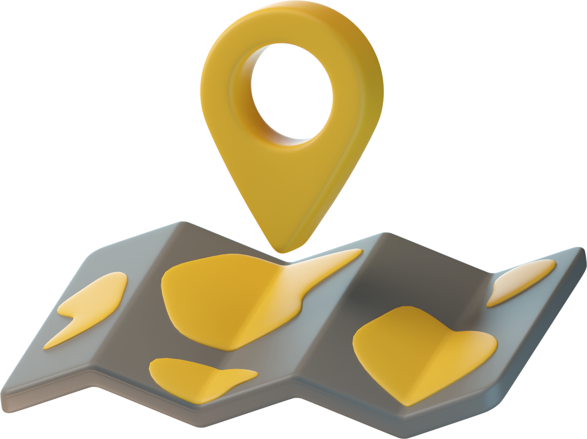

한국접근성평가연구원 소개
(사)한국접근성평가연구원은 각종 전자정보통신 제품 및 서비스의 접근성을 향상시키기 위한 기술 표준과 이를 효과적으로 시험, 평가하는 연구방법론을 개발합니다. 개발된 표준 및 방법론을 실제 제품 및 서비스에 적용하여, 그 결과를 공익적 차원에서 공개하고자 접근성 및 사용성 분야의 전문가들이 모였습니다.
따라서 더 많은 사람들에게 전자정보통신 관련 제품과 서비스의 접근성을 보장할 수 있는 최적의 방법을 학술적으로 연구 하고 교육하기 위한 구체적인 방법을 모색하여, 궁극적으로는 우리나라의 장애인과 고령자의 삶의 질 향상을 목적으로 설립되었습니다.
따라서 더 많은 사람들에게 전자정보통신 관련 제품과 서비스의 접근성을 보장할 수 있는 최적의 방법을 학술적으로 연구 하고 교육하기 위한 구체적인 방법을 모색하여, 궁극적으로는 우리나라의 장애인과 고령자의 삶의 질 향상을 목적으로 설립되었습니다.

한국접근성평가연구원는 어떤 일을 하나요?
한국접근성평가연구원은 가전제품이나 전자정보통신 제품 및 서비스 접근성의 시험 평가 방법을 연구하고 표준을 개발합니다. 접근성 분야의 연구자와 전문가가 직접 평가에 참여하여 제품과 서비스의 접근성을 평가하고 보고서를 발행합니다. 또한 제품과 서비스에 대한 접근성 진단을 토대로 접근성 관련 컨설팅과 교육을 진행하여 더 많은 사람들이 제한없이 이용할 수 있도록 최적의 방법을 제시합니다.
engineering
시험평가방법연구
checklist
시험평가표준개발
receipt_long
평가 보고서 발행
co_present
접근성 컨설팅 및 교육
조직도
-
이사이성일
- 성균관대 시스템경영공학부 교수
- 국가기술표준원 전문위원
-
이사손병창
- 나사렛대 재활의료공학과 교수
- 한국전자정보 통신사업진흥회 가전 접근성 표준기술위원
-
이사이인석
- 한경대 산업시스템공학과 교수
-
이사이진복
- 한서대 의료복지공학과 교수
- 한국전자정보 통신사업진흥회 가전 접근성 표준기술위원
-
이사박재현
- 인천대 산업경영공학과 교수
- 서울경기질병판정위원회 위원
-
이사김현경
- 광운대 정보융합부 교수
-
이사김상화
- 한국ICT접근성연구센터 이사
- 싸인커뮤니케이션연구소 대표
- 한국농아사회정보원 회장
-
이사이지용
- LG전자 책임연구원
- 한국전자정보 통신산업진흥회 가전접근성 표준기술위원
-
실장김대성
- 한국전자정보 통신산업진흥회 전문위원
- KEA 가전접근성 표준기술위원회 간사
지도 api 서비스 연동 준비중입니다.
